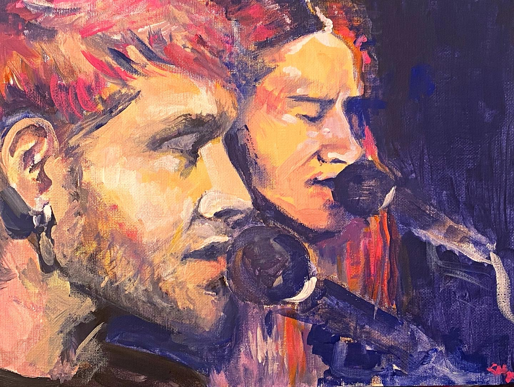
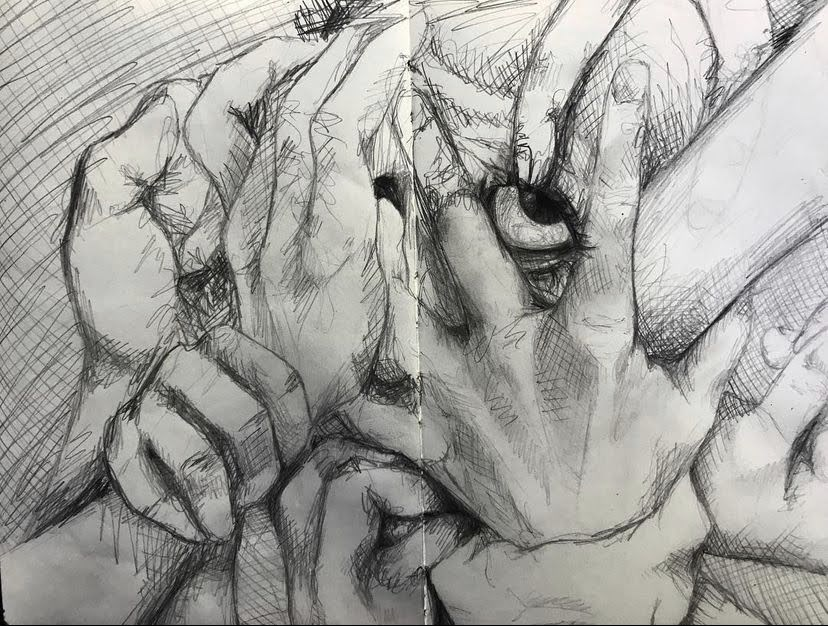
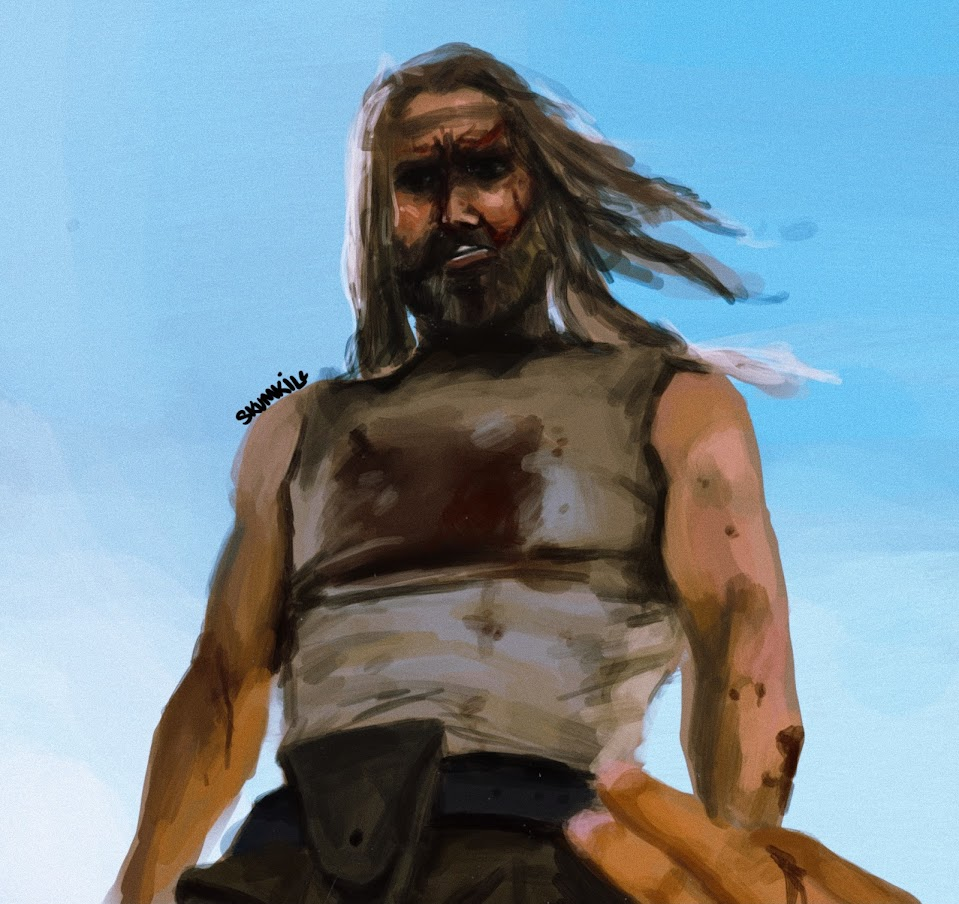
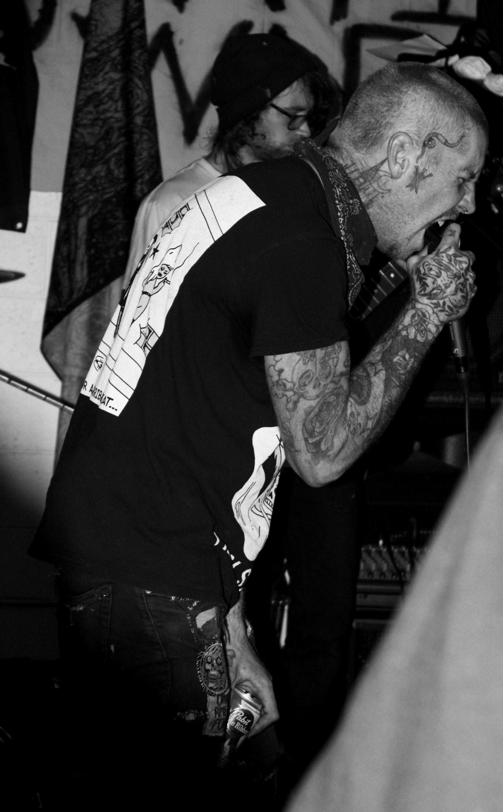
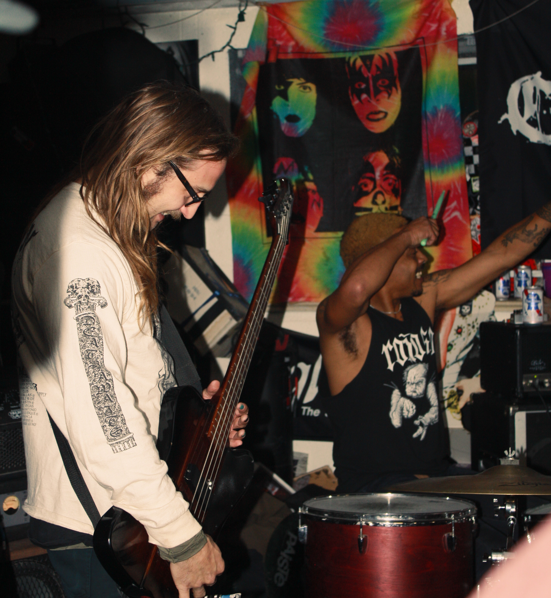
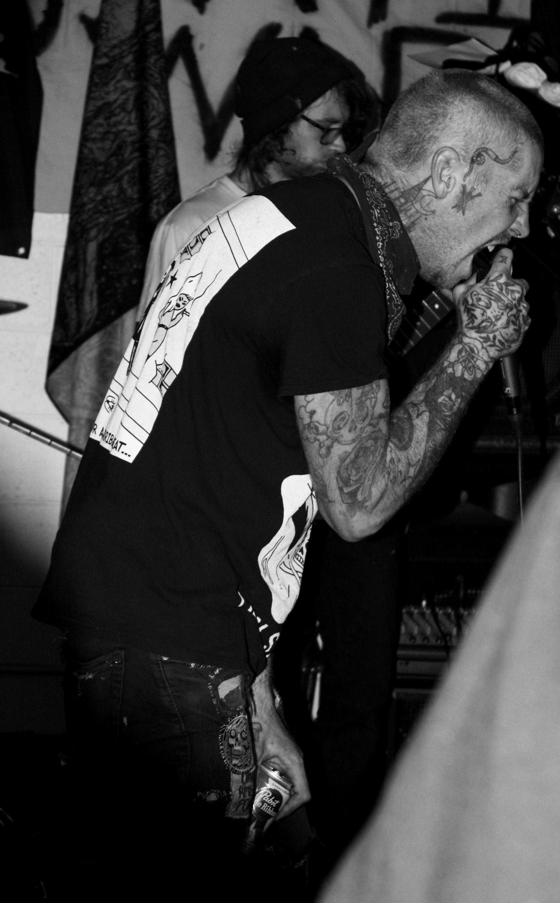
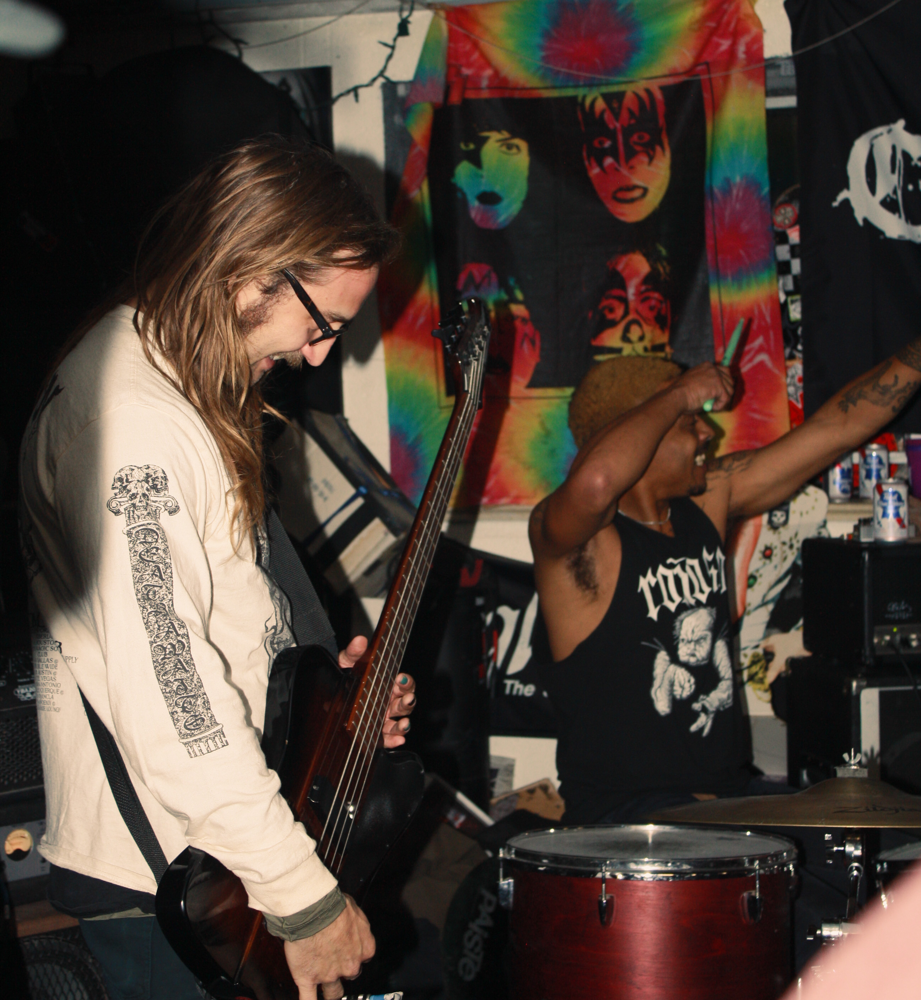

Portfolio
I have a pretty extensive collection of works spanning across many different areas of creative expression; I like to create things, whether they're exceptionally successful, or not so much. Below are some different finished works that I am proud of.
Artwork
The following artworks are both physical media, and digital media. Most are shared on Instagram.
 .jpg)
The first piece is a fauvism painting of Layne and Jerry from Alice in Chains. The reference I used was a screenshot from their 1996 Unplugged concert, and my goal was to recreate the image using as few colors as possible.
The second piece is a pencil drawing from a sketchbook that my AP art class passed around. After everyone had drawn something in it and claimed their two pages, my instructor sent it off to a friend of his who was an illustrator, and he contributed his own artworks to it.
Piece number three is one of my first attempts at digital painting. The reference I used was a screenshot from The Devil's Rejects, of an excellent upward shot of Otis Driftwood.
The final piece in this collection is from my series of cubist body horror painitings. This one is called "Facelift", which is both an Alice in Chains reference in disguise, and a cubist take on a mid-surgery facelift look, right before they're sewn back together and sent off in bandages.
Photography
I have a limited collection of photography currently; most of my photos were given to those who commissioned the work and I no longer have them, but, here are a few that I do.
 

Picture number one is a photo I took at a record store in Denver called Chain Reaction records. It was during a set (and a pit) by a local band called Plunge, whose bassist is featured in picture number four. I'm glad I got this--it was a quick but sweet little moment between two strangers in a very cramped mosh pit.
The second image is of another local band called Big Gulp. My friend and I toured with these two bands to get them as much footage and as many photos as possible. This is the lead singer, Kip, and the bassist, Cam. It's my favorite picture from the entire tour.
The third image is also of Big Gulp; their other two members, Zach and Phil. I liked this one a lot--this was a rare moment of low intensity from them; they're both smiling.
The last image is of the bassist and lead singer from Plunge, John. They usually played in really low lighting, which made it hard to get good photos without flash (they said flash was fine, but, flash is very distracting, so I tried to limit how often I used it). I think after editing, the stylization works quite well for their aesthetic.